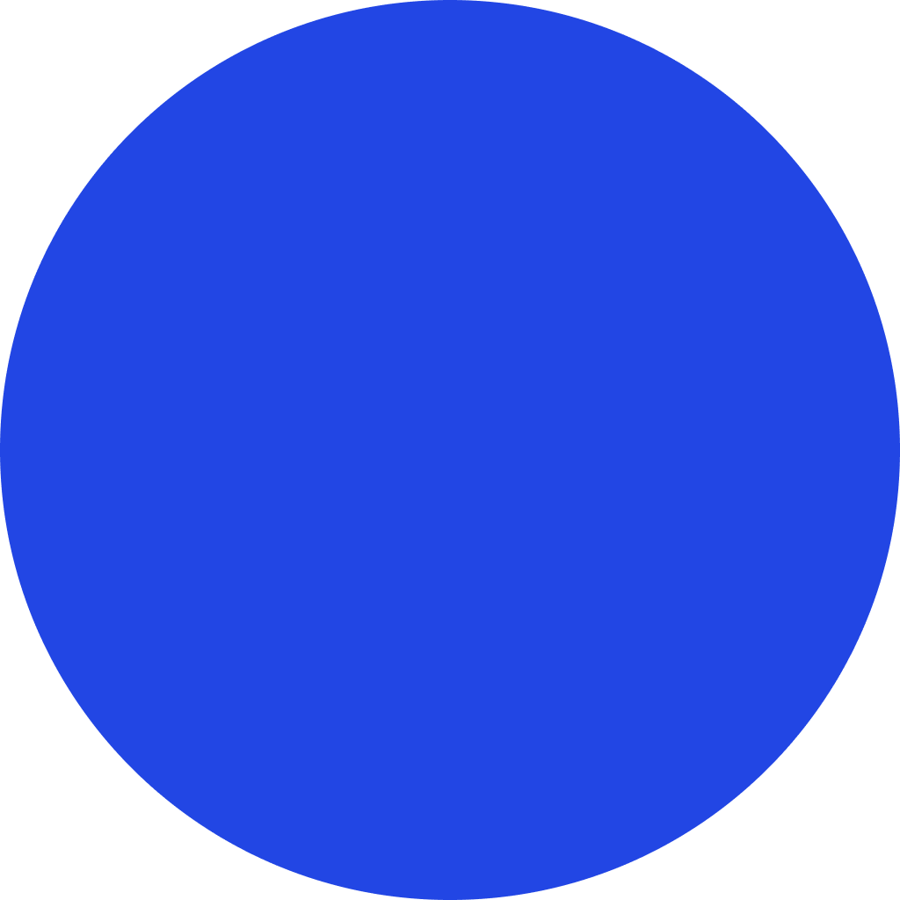

Multi-sensor Physicalization
Community
Play
While FishOn already digitalizes the market for younger users, it still lacks a natural flow to guide them before, during, and after their trips. Young anglers often face fragmented knowledge and steep learning curves, especially when fishing within limited time.
Our goal is to make the experience more organized, reduce disappointment from empty catches, and ensure fishing remains fun and efficient.
Our goal is to make the experience more organized, reduce disappointment from empty catches, and ensure fishing remains fun and efficient.
HMW create a natural, seamless flow that guides users before, during, and after fishing trips?
2D Map Interface
- Recommendation engine
- Community-marked fishing spots
- Real-time weather overlays & ideal time suggestions
- Route planning and GPS-based navigation
2.5D Map Interface — Emotion & Discovery Map
- Unlock & track regional fish species
- Check-in system with badges & rewards
- Encouragement system via motivational popups
- Beginner-friendly suggestion cards
4D XR Map Interface
- Visual reconstruction of fish spots via 3D scanning
- AR-based immersive previews
- Fish species terrain recognition with AI guidance
- Species detection & highlight moment replay

2D Map Interface
2.5D Map Interface — Emotion & Discovery Map
4D XR Map Interface